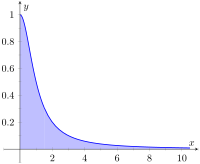
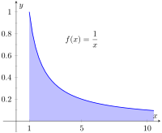
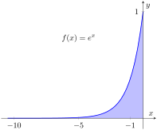
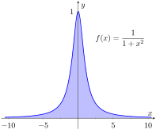
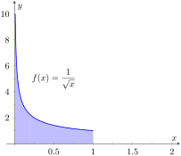
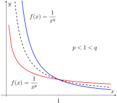
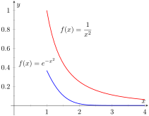
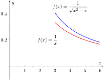
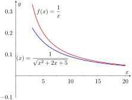

Notice how the integrand is \(1/(1+x^2)\) in each integral (which is sketched in Figure 6.8.1). As the upper bound gets larger, one would expect the “area under the curve” would also grow. While the definite integrals do increase in value as the upper bound grows, they are not increasing by much. In fact, consider:
As \(b\rightarrow \infty\text{,}\)\(\tan^{-1}(b) \rightarrow \pi/2\text{.}\) Therefore it seems that as the upper bound \(b\) grows, the value of the definite integral \(\ds \int_0^b\frac{1}{1+x^2}\, dx\) approaches \(\pi/2\approx 1.5708\text{.}\) This should strike the reader as being a bit amazing: even though the curve extends “to infinity,” it has a finite amount of area underneath it.

Figure6.8.1.Graphing \(\ds f(x)=\frac{1}{1+x^2}\)
When we defined the definite integral \(\ds\int_a^b f(x)\, dx\text{,}\) we made two stipulations:
The interval over which we integrated, \([a,b]\text{,}\) was a finite interval, and
The function \(f(x)\) was continuous on \([a,b]\) (ensuring that the range of \(f\) was finite).
In this section we consider integrals where one or both of the above conditions do not hold. Such integrals are called improper integrals.
Subsection6.8.1Improper Integrals with Infinite Bounds
Definition6.8.2.Improper Integrals with Infinite Bounds; Converge, Diverge.
Let \(f\) be a continuous function on \([a,\infty)\text{.}\) Define
\begin{equation*}
\int_a^\infty f(x)\, dx \text{ to be } \lim_{b\to\infty}\int_a^b f(x)\, dx\text{.}
\end{equation*}
Let \(f\) be a continuous function on \((-\infty,b]\text{.}\) Define
\begin{equation*}
\int_{-\infty}^b f(x)\, dx \text{ to be } \lim_{a\to-\infty}\int_a^b f(x)\, dx\text{.}
\end{equation*}
Let \(f\) be a continuous function on \((-\infty,\infty)\text{.}\) Let \(c\) be any real number; define
\begin{equation*}
\int_{-\infty}^\infty f(x)\, dx \text{ to be } \lim_{a\to-\infty}\int_a^c f(x)\, dx\,+\,\lim_{b\to\infty}\int_c^b f(x)\, dx\text{.}
\end{equation*}
An improper integral is said to converge if its corresponding limit exists; otherwise, it diverges. The improper integral in part 3 converges if and only if both of its limits exist.
The limit does not exist, hence the improper integral \(\ds\int_1^\infty\frac1x\, dx\) diverges. Compare the graphs in Figures 6.8.4 and Figure 6.8.5; notice how the graph of \(f(x) = 1/x\) is noticeably larger. This difference is enough to cause the improper integral to diverge.

Figure6.8.5.A graph of \(f(x) = \frac{1}{x}\) in Example 6.8.3
A graph of the area defined by this integral is given in Figure 6.8.6.

Figure6.8.6.A graph of \(f(x) = e^x\) in Example 6.8.3
We will need to break this into two improper integrals and choose a value of \(c\) as in part 3 of Definition 6.8.2. Any value of \(c\) is fine; we choose \(c=0\text{.}\)
Each limit exists, hence the original integral converges and has value:
\begin{align*}
\amp = \pi\text{.}
\end{align*}
A graph of the area defined by this integral is given in Figure 6.8.7.

Figure6.8.7.A graph of \(f(x) = \frac{1}{1+x^2}\) in Example 6.8.3
The previous section introduced L'Hospital's Rule, a method of evaluating limits that return indeterminate forms. It is not uncommon for the limits resulting from improper integrals to need this rule as demonstrated next.
Example6.8.8.Improper integration and L'Hospital's Rule.
Evaluate the improper integral \(\ds \int_1^\infty \frac{\ln(x) }{x^2}\, dx\text{.}\)
The \(1/b\) and \(\ln(1)\) terms go to 0, leaving \(\lim\limits_{b\to\infty} -\frac{\ln(b) }b + 1\text{.}\) We need to evaluate \(\lim\limits_{b\to\infty} \frac{\ln(b) }{b}\) with l'Hospital's Rule. We have:
Subsection6.8.2Improper Integrals with Infinite Range
We have just considered definite integrals where the interval of integration was infinite. We now consider another type of improper integration, where the range of the integrand is infinite.
Definition6.8.10.Improper Integration with Infinite Range.
Let \(f(x)\) be a continuous function on \([a,b]\) except at \(c\text{,}\)\(a\leq c\leq b\text{,}\) where \(x=c\) is a vertical asymptote of \(f\text{.}\) Define
A graph of \(f(x) = 1/\sqrt{x}\) is given in Figure 6.8.12. Notice that \(f\) has a vertical asymptote at \(x=0\text{;}\) in some sense, we are trying to compute the area of a region that has no “top.” Could this have a finite value?
It turns out that the region does have a finite area even though it has no upper bound (strange things can occur in mathematics when considering the infinite).

Figure6.8.12.A graph of \(f(x)=\frac{1}{\sqrt{x}}\) in Example 6.8.11
The function \(f(x) = 1/x^2\) has a vertical asymptote at \(x=0\text{,}\) as shown in Figure 6.8.13, so this integral is an improper integral. Let's eschew using limits for a moment and proceed without recognizing the improper nature of the integral. This leads to:
Figure6.8.13.A graph of \(f(x)=\frac{1}{x^2}\) in Example 6.8.11
Clearly the area in question is above the \(x\)-axis, yet the area is supposedly negative! Why does our answer not match our intuition? To answer this, evaluate the integral using Definition 6.8.10.
Neither limit converges hence the original improper integral diverges. The nonsensical answer we obtained by ignoring the improper nature of the integral is just that: nonsensical.
Subsection6.8.3Understanding Convergence and Divergence
Oftentimes we are interested in knowing simply whether or not an improper integral converges, and not necessarily the value of a convergent integral. We provide here several tools that help determine the convergence or divergence of improper integrals without integrating.
Our first tool is to understand the behavior of functions of the form \(\ds \frac1{x^p}\text{.}\)
Example6.8.14.Improper integration of \(1/x^p\).
Determine the values of \(p\) for which \(\ds \int_1^\infty \frac1{x^p}\, dx\) converges.
When does this limit converge — i.e., when is this limit not\(\infty\text{?}\) This limit converges precisely when the power of \(b\) is less than 0: when \(1-p\lt 0 \Rightarrow 1\lt p\text{.}\)

Figure6.8.15.Plotting functions of the form \(1/x^p\) in Example 6.8.14
Our analysis shows that if \(p \gt 1\text{,}\) then \(\ds\int_1^\infty \frac1{x^p}\, dx\) converges. When \(p\lt 1\) the improper integral diverges; we showed in Example 6.8.3 that when \(p=1\) the integral also diverges.
Figure 6.8.15 graphs \(y=1/x\) with a dashed line, along with graphs of \(y=1/x^p\text{,}\)\(p\lt 1\text{,}\) and \(y=1/x^q\text{,}\)\(q \gt 1\text{.}\) Somehow the dashed line forms a dividing line between convergence and divergence.
The result of Example 6.8.14 provides an important tool in determining the convergence of other integrals. A similar result is proved in the exercises about improper integrals of the form \(\ds \int_0^1\frac1{x^p}\, dx\text{.}\) These results are summarized in the following Key Idea.
Key Idea6.8.16.Convergence of Improper Integrals involving \(1/x^p\).
The improper integral \(\ds \int_1^\infty\frac1{x^p}\, dx\) converges when \(p\gt 1\) and diverges when \(p\leq 1\text{.}\)
The improper integral \(\ds \int_0^1\frac1{x^p}\, dx\) converges when \(p\lt 1\) and diverges when \(p\geq 1\text{.}\)
A basic technique in determining convergence of improper integrals is to compare an integrand whose convergence is unknown to an integrand whose convergence is known. We often use integrands of the form \(1/x^p\) to compare to as their convergence on certain intervals is known. This is described in the following theorem.
Theorem6.8.17.Direct Comparison Test for Improper Integrals.
Let \(f\) and \(g\) be continuous on \([a,\infty)\) where \(0\leq f(x)\leq g(x)\) for all \(x\) in \([a,\infty)\text{.}\)
If \(\ds \int_a^\infty g(x)\, dx\) converges, then \(\ds \int_a^\infty f(x)\, dx\) converges.
If \(\ds \int_a^\infty f(x)\, dx\) diverges, then \(\ds \int_a^\infty g(x)\, dx\) diverges.
Example6.8.18.Determining convergence of improper integrals.
Determine the convergence of the following improper integrals.
The function \(f(x) = e^{-x^2}\) does not have an antiderivative expressible in terms of elementary functions, so we cannot integrate directly. It is comparable to \(g(x)=1/x^2\text{,}\) and as demonstrated in Figure 6.8.19, \(e^{-x^2} \lt 1/x^2\) on \([1,\infty)\text{.}\) We know from Key Idea 6.8.16 that \(\ds \int_1^\infty \frac{1}{x^2}\, dx\) converges, hence \(\ds\int_1^\infty e^{-x^2}\, dx\) also converges.

Figure6.8.19.Graphs of \(f(x) = e^{-x^2}\) and \(f(x)= 1/x^2\) in Example 6.8.18
Note that for large values of \(x\text{,}\)\(\ds \frac{1}{\sqrt{x^2-x}} \approx \frac{1}{\sqrt{x^2}} =\frac{1}{x}\text{.}\) We know from Key Idea 6.8.16 and the subsequent note that \(\ds \int_3^\infty \frac1x\, dx\) diverges, so we seek to compare the original integrand to \(1/x\text{.}\) It is easy to see that when \(x \gt 0\text{,}\) we have \(x = \sqrt{x^2} \gt \sqrt{x^2-x}\text{.}\) Taking reciprocals reverses the inequality, giving
Using Theorem 6.8.17, we conclude that since \(\ds\int_3^\infty\frac1x\, dx\) diverges, \(\ds\int_3^\infty\frac1{\sqrt{x^2-x}}\, dx\) diverges as well. Figure 6.8.20 illustrates this.

Figure6.8.20.Graphs of \(f(x) = 1/\sqrt{x^2-x}\) and \(f(x)= 1/x\) in Example 6.8.18
Being able to compare “unknown” integrals to “known” integrals is very useful in determining convergence. However, some of our examples were a little “too nice.” For instance, it was convenient that \(\ds \frac{1}x \lt \frac{1}{\sqrt{x^2-x}}\text{,}\) but what if the “\(-x\)” were replaced with a “\(+2x+5\)”? That is, what can we say about the convergence of \(\ds \int_3^\infty\frac{1}{\sqrt{x^2+2x+5}}\, dx\text{?}\) We have \(\ds \frac{1}{x} \gt \frac1{\sqrt{x^2+2x+5}}\text{,}\) so we cannot use Theorem 6.8.17.
In cases like this (and many more) it is useful to employ the following theorem.
Theorem6.8.21.Limit Comparison Test for Improper Integrals.
Let \(f\) and \(g\) be continuous functions on \([a,\infty)\) where \(f(x) \gt 0\) and \(g(x) \gt 0\) for all \(x\text{.}\) If
As \(x\) gets large, the denominator of the integrand will begin to behave much like \(y=x\text{.}\) So we compare \(\ds\frac{1}{\sqrt{x^2+2x+5}}\) to \(\ds\frac1x\) with the Limit Comparison Test:
The immediate evaluation of this limit returns \(\infty/\infty\text{,}\) an indeterminate form. Using L'Hospital's Rule seems appropriate, but in this situation, it does not lead to useful results. (We encourage the reader to employ L'Hospital's Rule at least once to verify this.)
The trouble is the square root function. To get rid of it, we employ the following fact: If \(\lim\limits_{x\to c} f(x) = L\text{,}\) then \(\lim\limits_{x\to c} f(x)^2 = L^2\text{.}\) (This is true when either \(c\) or \(L\) is \(\infty\text{.}\)) So we consider now the limit
This converges to 1, meaning the original limit also converged to 1. As \(x\) gets very large, the function \(\ds\frac{1}{\sqrt{x^2+2x+5}}\) looks very much like \(\ds\frac1x\text{.}\)\ Since we know that \(\ds\int_3^{\infty} \frac1x\, dx\) diverges, by the Limit Comparison Test we know that \(\ds\int_3^\infty\frac{1}{\sqrt{x^2+2x+5}}\, dx\) also diverges. Figure 6.8.23 graphs \(f(x)=1/\sqrt{x^2+2x+5}\) and \(f(x)=1/x\text{,}\) illustrating that as \(x\) gets large, the functions become indistinguishable.

Figure6.8.23.Graphing \(f(x)=\frac{1}{\sqrt{x^2+2x+5}}\) and \(f(x)=\frac1x\) in Example 6.8.22
Both the Direct and Limit Comparison Tests were given in terms of integrals over an infinite interval. There are versions that apply to improper integrals with an infinite range, but as they are a bit wordy and a little more difficult to employ, they are omitted from this text.
This chapter has explored many integration techniques. We learned Substitution, which “undoes” the Chain Rule of differentiation, as well as Integration by Parts, which “undoes” the Product Rule. We learned specialized techniques for handling trigonometric functions and introduced the hyperbolic functions, which are closely related to the trigonometric functions. All techniques effectively have this goal in common: rewrite the integrand in a new way so that the integration step is easier to see and implement.
As stated before, integration is, in general, hard. It is easy to write a function whose antiderivative is impossible to write in terms of elementary functions, and even when a function does have an antiderivative expressible by elementary functions, it may be really hard to discover what it is. The powerful computer algebra system Mathematica™ has approximately 1,000 pages of code dedicated to integration.
Do not let this difficulty discourage you. There is great value in learning integration techniques, as they allow one to manipulate an integral in ways that can illuminate a concept for greater understanding. There is also great value in understanding the need for good numerical techniques: the Trapezoidal and Simpson's Rules are just the beginning of powerful techniques for approximating the value of integration.
The next chapter stresses the uses of integration. We generally do not find antiderivatives for antiderivative's sake, but rather because they provide the solution to some type of problem. The following chapter introduces us to a number of different problems whose solution is provided by integration.
Exercises6.8.4Exercises
Terms and Concepts
1.
The definite integral was defined with what two stipulations?
2.
If \(\lim\limits_{b\to \infty} \int_0^b f(x)\, dx\) exists, then the integral \(\ds \int_0^\infty f(x)\, dx\) is said to .
3.
If \(\ds \int_1^\infty f(x)\, dx=10\text{,}\) and \(0\leq g(x)\leq f(x)\) for all \(x\text{,}\) then we know that \(\ds \int_1^\infty g(x)\, dx\) .
4.
For what values of \(p\) will \(\ds \int_1^\infty \frac1{x^p}\, dx\) converge?
\(\displaystyle p\lt 1\)
\(\displaystyle p\leq 1\)
\(\displaystyle p\gt 1\)
\(\displaystyle p\geq 1\)
5.
For what values of \(p\) will \(\ds \int_{10}^\infty \frac1{x^p}\, dx\) converge?
\(\displaystyle p\lt 1\)
\(\displaystyle p\leq 1\)
\(\displaystyle p\gt 1\)
\(\displaystyle p\geq 1\)
6.
For what values of \(p\) will \(\ds \int_{0}^1 \frac1{x^p}\, dx\) converge?
\(\displaystyle p\lt 1\)
\(\displaystyle p\leq 1\)
\(\displaystyle p\gt 1\)
\(\displaystyle p\geq 1\)
Problems
Exercise Group.
In the following exercises, evaluate the given improper integral.
In the following exercises, use the Direct Comparison Test or the Limit Comparison Test to determine whether the given definite integral converges or diverges. Clearly state what test is being used and what function the integrand is being compared to.